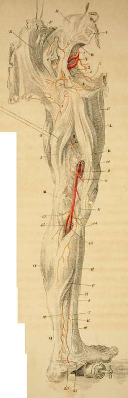

Arteries Of The Lower Extremity. Posterior
Description
This section is from the book "Engravings Of The Arteries", by Charles Bell. Also available from Amazon: Engravings Of The Arteries; Illustrating The Anatomy Of The Human Body, And Serving As An Introduction To The Surgery Of The Arteries.
Arteries Of The Lower Extremity. Posterior
a. The body of the last Lumbar Vertebra sawn through.
b. The Sacrum.
c. Ischiatic Ligaments.
d. The Lumbar Muscles.
e. The Great Gluteus Muscle.
f. The Lesser Gluteus Muscle.
g. The Gracilis Muscle.
h. The Vastus Eacternus Muscle.
i. The Outer Hamstring Muscles; i. e. the Biceps.
k. The Inner Hamstring Muscles, i. e. the SemUtendinosus and Semi-membranosus.
l. The Triceps.
M. The Outer Condyle of the Thigh bone.
n. The Inner Condyle.
o. The Belly of the Gastrocnemius Muscle.
v. The Soleus Muscle.
q. The Achilles Tendon.
r. The Tibia.
s. The Great Flexor Pollicis.
t. The Flexor Digitorum Communis.
1. The Internal Iliac Artery; giving off,
2. Hypogastric Artery.
3. Ischiatic Artery.*
4. The Fit die Artery.
* To hit upon the Ischiatic Artery as it comes out from the Pelvis, begin the incision by the side of the Sacrum, three fingers breadth from the posterior spinous process of the Ilium, and carry it down, in the length of the fibres of the Gluteus Maximus, to the outside of the tuberosity of the Ischium. Even in a thin man, the artery lies two inches deep. Now, pushing in the finger as if under the sacrum, we there feel the acute edge of the sacro-sciatic ligament; on the lower margin of the sacro-sciatic hole, (which is distinctly felt with the finger amongst the looser parts,) the artery is felt crossing the ligament obliquely; near it, upon its outer side, are some lesser nerves; the great Sciatic Nerve is removed an inch from it.
5. The Obturator Artery.*
6. The Gluteal Artery.-+
7. A branch from the Internal Circumflex Artery.
8. Branches of the Perforating Arteries of the Profunda.
9. The Popliteal Artery after it has pierced the Triceps Muscle.++
* We see here what would be the situation of the Obturator Artery, if a Hernia should descend under Poupart's ligament in a person having this distribution of the vessel. See Cooper on Hernia.
+ To strike upon the Gluteal Artery, we cut in the direction of the fibres of the Gluteus Maximus, beginning about two fingers' breadth beneath the posterior spine of the Ilium; we cut through the Gluteus Maximus and Medius just upon the lower edge of the Ilium; we find the trunk of this artery rising to mount upon the back of the Ilium; we must observe, too, that considerable branches are carried outwards through the muscle, into which we must cut to arrive at the seat of the trunk.
In case of a wound in this artery, and the consequent formation of a false Aneurism, the surgeon, after puncturing the tumour, has to push his finger deep amongst the blood until he arrive at the trunk over the notch of the Ilium—compressing it there, he may gain time.
++ The Popliteal Artery wounded by a sabre; Principles of Surgery, 328—wounded by the sharp projection of the femur after fracture: Operative Surgery, ii. 357.
10. Those branches sent off from the main artery as it is passing the Tendon; they are called the perforating branches of the Poplitel Artery.
11. The Upper and Internal Articular Artery.
12. The Upper External Articular Artery.
13. The Lower External Articular Artery.
14. The lower Internal Articular Artery.
15. The Posterior Tibial Artery; the Anterior Tibial Artery (Plate IX. 16.) is a branch sent off from this.*
16. The Peroneal Artery, or Fibular Artery.+
* Posterior Tibial Artery gives off the outer Tibial; piercing betwixt the heads of the bones exactly four fingers' breadth below the upper end of the Tibia; lying upon the Popliteus Muscle, it is about two fingers breadth removed from the inner edge of the Tibia.
+ Fibular Artery. It comes through the bones one inch below the projection of the knob of the Fibula. To hit upon it,
1. We cut through the strong fascia.
2. Betwixt the heads of the Ex-tensor Digitorum Longus, and of the Peroneus Longus, we find it lying on the interosseous ligament. N. B. We must cut through some of the fibres cf the Extensor Digitorum Longus.
To cut for the Fibular Artery lower in the leg than a hands' breadth from the head of the Fibula.
1. The fascia.
2. By the outside of the Tibialis Anticus; betwixt it and the Extensor Profirius Pollicis.
It seems a shocking alternative to be obliged to saw out the Fibula, in order to tie this artery. To find this artery two hands' breadth from the heel, cut down on the outside of the Gastrocnemius, where it is becoming tendinous; turn up the edge of the tendons; you then find the Flexor Pollicis Magnus covered with its sheath. If you seek for the Fibular Artery, by going deep into the leg without piercing this fascia, you find the Tibial Nerve, and may come on the Tibial Artery. To find the Fibular, then, we cut down by the side of the bone (fibula), and raise the fibrous origins of the Flexor Pollicis. We then find the artery by the acute edge of the bone, lying on the ligament, accompanied only by its Venae Comites.
17. The Posterior Tibial Artery appears here again from under the Soleus Muscle.*
* The Posterior Tibial Artery. For complicated wounds in the sole of the foot, this artery may require to be taken up behind the ancle joint, and before it pierces under the Flexor brevis pollicis pedes. We shall be directed to the exact place, by observing the lowest projecting part of the Tibia. The tendons, which run close upon this tuberosity of the bone, are the Tibialis Posticus, and Flexor Communis; the first lies so closely braced to the bone in its particular sheath, that it will not be observed; the artery runs a little nearer the heel than the tendon of the Flexor Communis; a fascia braces down the artery, the nerve is under the artery.
18. The Fibular Artery; it is seen to form large inosculations with the Tibial Artery.
19. A remarkable inosculation betwixt the Tibial and Fibular Arteries.
20. The External Plantar Artery.
21. The Internal Plantar Artery.
Continue to: